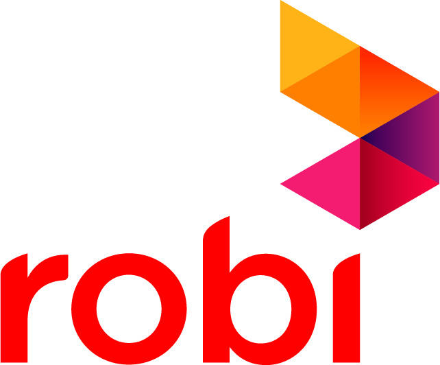
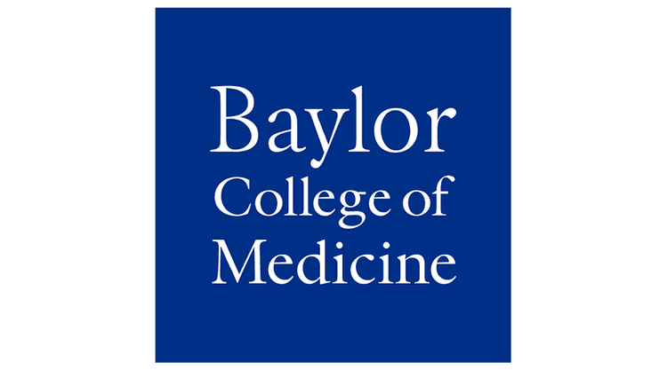

|
Ohida Binte Amin Hi, I’m a Ph.D. candidate in Computer Science / Personal Health Informatics at Northeastern University, supervised by Prof. Aarti Sathyanarayana. I am interested in extending state-of-the-art ML innovations to improve personal health monitoring and healthcare systems by incorporating digital phenotyping to better extract contextual, & behavioral information from smartphones and wearables' data. Previously, I earned my BS in Computer Science in 2020 from Khulna University of Engineering & Technology, Bangladesh. I also worked as a research fellow at Baylor College of Medicine and, Rice University and held industry positions at Samsung Research America, Robi Axiata Limited, and Abelling where I applied machine learning to the digital health domain and assistive technologies. My research has been presented at ACII 2023, SLEEP 2024, and EMBC 2025. Email / CV / Google Scholar / LinkedIn |

|
Research and Work Experience
Northeastern University
Samsung Research America

Robi Axiata Limited

Baylor College of Medicine
Abelling |
News2025
2024
2023
2022
|
Recent PublicationsExtending Stress Detection Reproducibility to Consumer Wearable Sensors
Ohida Binte Amin, Tinashe M. Tapera, Robert Volpe, Varun Mishra, Aarti Sathyanarayana The Impact of Stress and Sleep: Capturing Multiday Patterns
Ohida Binte Amin, Varun Mishra, Aarti Sathyanarayana Investigating Social Interaction Patterns with Depression Severity across Different Personality Traits Using Digital Phenotyping
Ohida Binte Amin, Varun Mishra, Aarti Sathyanarayana |